Designing a Seamless Photo-Sharing Flow for Partiful: Understanding User Behaviors and Needs Through Iterative UX Evaluation
1
PARTIFUL OVERVIEW
Partiful is an app for creating aesthetic event pages, RSVPing, and sending
updates via text blast. While the platform is successful with pre-event
engagement, the post-event experience is underutilized. Our challenge was
to redesign a multi-screen iOS photo-sharing feature that deepens user
connection by making memories from IRL events feel communal and
lasting—without forcing awkward or public sharing.
👥 Target Users
18–30 year-olds who take and share photos at social events.
Guests of these events want to share their photos and hosts want a streamlined
method of collecting said photos.
💡 User Pain Points
Through research and informal interviews, we identified key barriers:
Social friction: Guests are hesitant to share photos
if they are not familiar with everyone who attended the event.
Validation: There is little reward for uploading photos.
Discoverability: Users often overlook the photo upload option.
2
IDEATION
We sketched different flows to explore solutions to each of these unique challenges.
You can view our sketches here.
Our sketches tackled:
Albums with different themes based on party
A home screen with a “My Albums” section
Incorporating social media elements like hearts, comments, and shares
A new album layout
Snapchat-style geofilters
A dedicated tab for albums
This allowed us to explore alternate layouts and navigation for the photos experience.
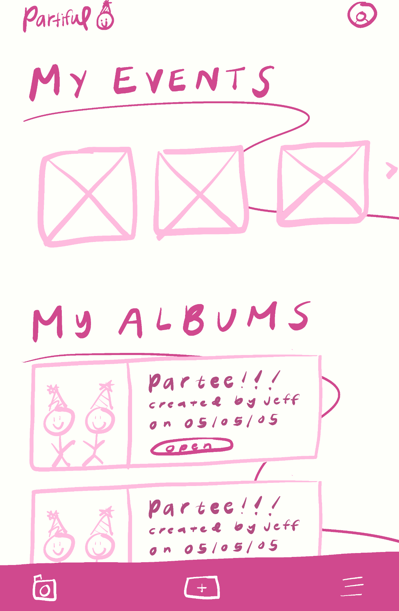
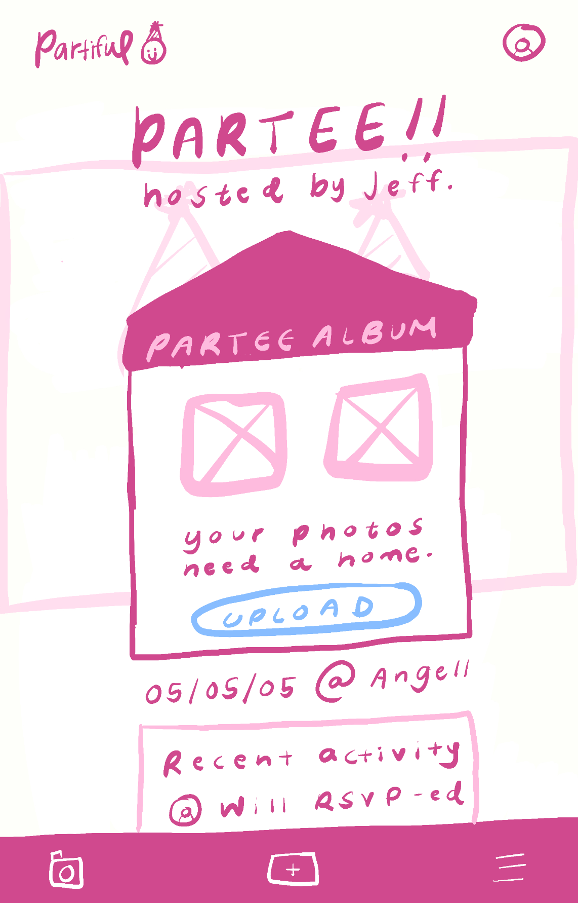
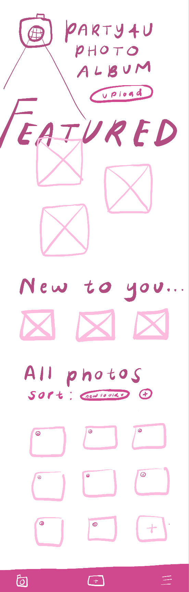
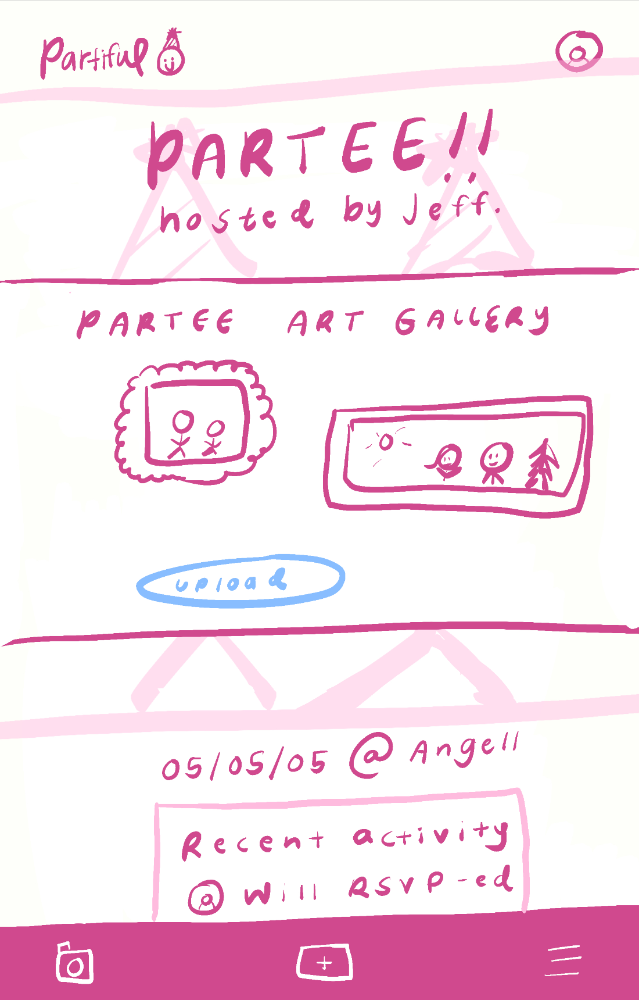
PHOTO ALBUM
📂 Organized Access
Clear list of all event albums with host, date, and preview
One-tap entry to view or upload
"Add photos" button added to sticky bar
Photo albums tab can be ordered by event
🎨 Smart Layouts
Sortable (newest, popular) + pinned highlights by hosts
Personalizable themes (art gallery, house party, etc.) – see screens 2 & 4
"Featured" & "New to You" sections to spotlight photos
Condensed event screen (albums prioritized at top of scroll)
💡 Engagement Boosters
Live activity updates ("@Will uploaded!") to spark sharing
Event date/location tags for nostalgia
Why It Works:
For Guests: Effortless Sharing: One-tap uploads and automatic sorting remove friction—no digging through menus or manual organizing. Instant Reward: Seeing their photos featured (with clear credit) makes sharing feel worthwhile. FOMO-Driven: Live activity updates ("@Jess just uploaded!") create friendly pressure to contribute.
For Hosts: Curated, Not Chaotic: Pinned highlights and themes (like art gallery or house party) let hosts shape the album's vibe without micromanaging. Event-specific albums (*art gallery/house party styles*) make photos feel valuable, not disposable
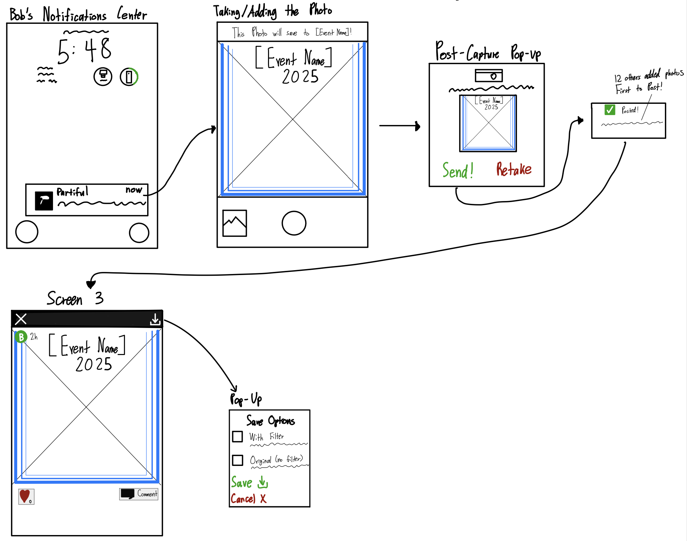
GEOFILTER
Smart Notification
Guests near the event get a push: "📸 You're at [Event]! Tap to add photos."
Clicking it opens the app's camera with the event's geofilter pre-loaded.
Flexible Capture
Live Camera: Snap pics instantly with the event's filter (e.g., "Rob's Birthday 2025")
Photo Library: Pick existing photos to apply the filter retroactively
Save & Share Options
Save with or without the filter (for authenticity or fun)
Auto-upload to the event album or manual review
Why It Works
Guests: Feels playful, not pushy—filter designs spark creativity.
Hosts: More candid, on-theme photos without begging.
App: Leverages FOMO + location to boost engagement.
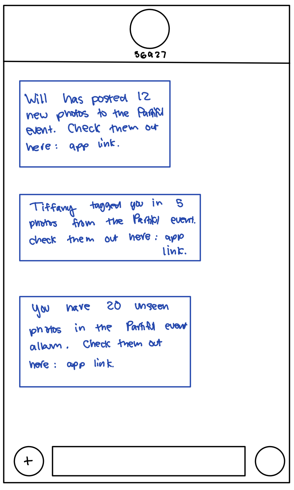
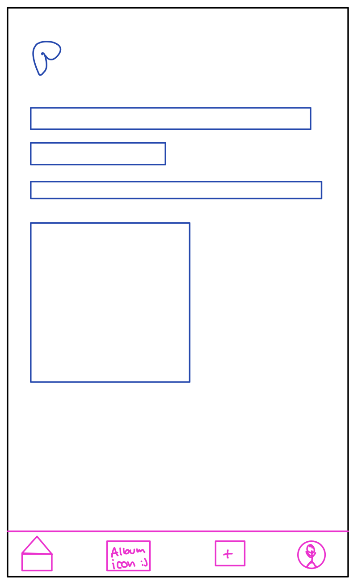
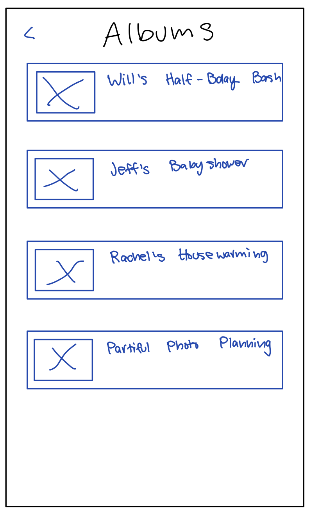
OUT OF EVENT PAGE
Text Blasts
Alerts for new photos ("Will added 12 prints"), tags ("Tiffany tagged you"), and unseen content ("20 new prints")
Sends via *app + SMS* with deep links
Dedicated Albums Tab
Central hub with all events ("Will's Half-Bday, "Jeff's Baby Shower")
+ icon for quick adding to albums
Why It Works
FOMO Engine: Notifications use social proof (tags, counts) to drive engagement.
Zero Friction: Dedicated tab + SMS links make albums unmissable.
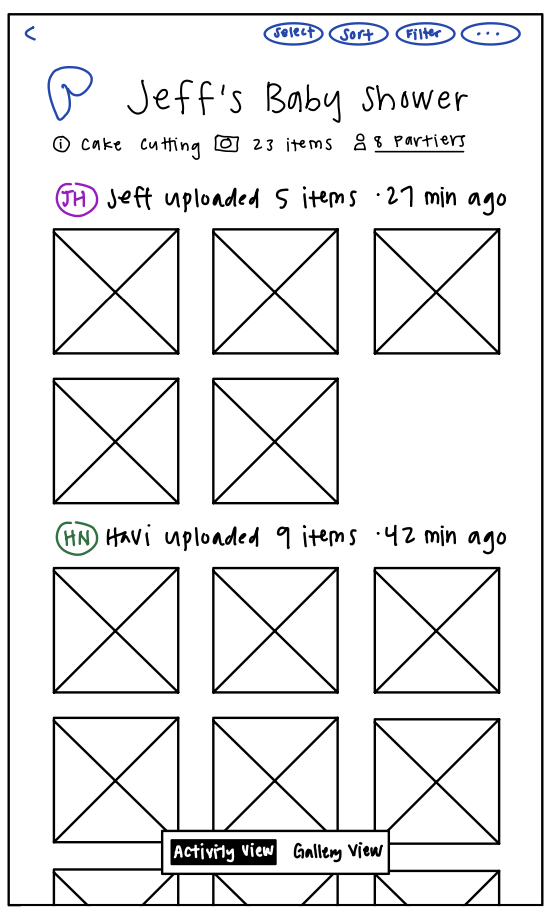
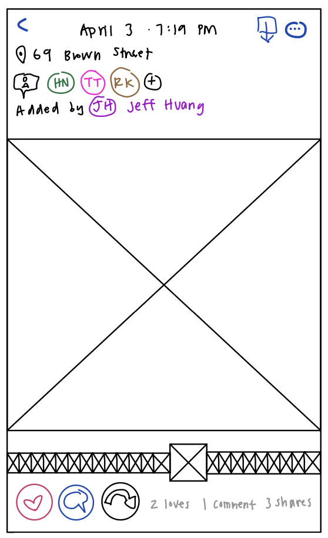
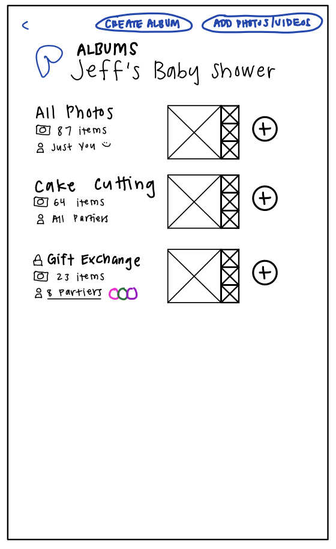
POST SHARING EXPERIENCE
Social Interactions
Likes, comments, and sharing on each photo ("Loves | Comment")
Tagging users in photos
Option to add photos to personal-only albums or shared spaces
Photo additions excluded from activity feed
Smart Sorting & Filtering
Sort by poster, time, or activity
Filter by: album sections or visibility
Activity Feed
Chronological updates ("havi updated 9 items • 42 min ago")
Rewards Participation: Public recognition (likes/tags) encourages more sharing.
Flexible Privacy: "Just You" albums reduce social pressure for hesitant users.
Contextual Browsing: Sorting by event moments (cake cutting) or people (Jeff/Havi) mirrors real-world memory recall.
FOMO-Friendly: Live timestamps ("27 min ago") + upload alerts keep engagement fresh.
Merging Ideas
We held a collaborative review of our sketches and noted patterns across designs,
such as the need for visibility, validation, and navigation simplicity. Instead of
treating each sketch as separate, we combined the strongest elements from each.
Add Photos
We kept the persistent upload button on the Events page to reduce discoverability friction.
"My Albums" Tab
This tab supports photo visibility outside the event scroll, giving users an easy way to revisit and sort photo albums across all events.
Tagging + Social Interactions
We carried forward ideas like tagging, hearts, and comments to add validation for users.
These live under each image, enabling engagement post-upload/post-event without the pressure of a public feed.
Event-Specific Photo Upload
Our sketch of a camera UI that saves to a specific event.
This screen also integrates playful design (e.g., geofilters).
Reflection
Designing this feature list helped us think more holistically about how users engage with memories—before, during, and after events.
We prioritized intuitive UI and low-friction interactions while staying mindful of emotional drivers like nostalgia, validation, and community.
Through sketches and feedback loops, we learned how even small decisions (like tab placement or icon affordances) can significantly influence user behavior.
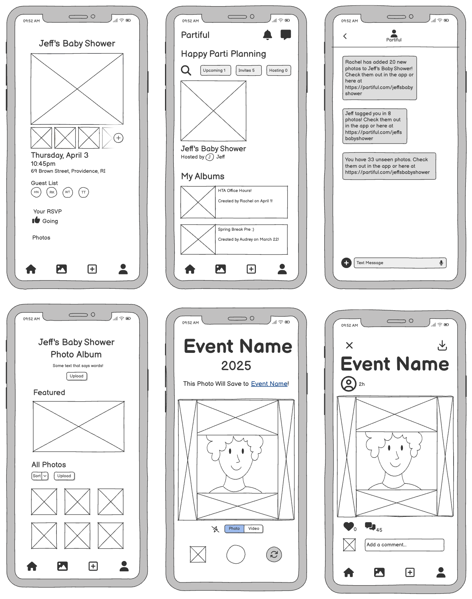
3
WIREFRAME CRITIQUE
Insights & Incorporation
We received feedback for our initial wireframes from Grace, a design
engineer at Partiful, and Michael, a Teaching Assistant for CSCI 1300.
Below we detail their feedback along with the ways
we incorporated it into our hi-fi prototype.
Grace "liked" the sticky bar with the slideshow of photos near the top
of the event page.
We maintained the sticky bar slideshow in our final design.
Grace said it "would be nice to show up to X photos [in the sticky bar
slideshow] and gate everything else" for after partiers RSVP 'yes' to
an event.
We added an RSVP-based privacy feature to Partiful photos.
Michael said the original “plus button icon” for the slideshow was confusing
because it makes him think he will be seeing more photos, not adding new ones.
We changed the icon to be more descriptive (Photo Album with a plus sign)
and its location (before the slideshow) to be less confusing.
Grace said the "add entry point" for the sticky bar slideshow "feels a
little awkward" and noted theat the "space on h-scrolls is
traditionally occupied by a > scroll button". She recommended that we
"have a CTA at the very end of the h-scroll" so that partiers are able
to see all content in the slideshow.
We removed the add entry point at the end of the slideshow per Grace's recommendations.
We did not include a CTA button as it made the section very cluttered when we prototyped it.
Instead, a slider under the photos should appear when the slideshow is populated with more
photos.
Grace noticed our introduction of an 'Albums' interface and concept
and asked questions about whether "each event [was] an album" and "an
album need[s] to be created or is something automatically an album" if
it is attached to an event.
We clarified the role of albums as collections of photos that are
attached to events. Users can create an album for a specific purpose,
but all photos added to an event will land in a catch-all "All Photos"
album as well.
Michael commented on making sure to keep spacing and proportion continuity from the app into our Hi-Fi Prototype as it seemed we deviated slightly with our Wireframes.
We made sure to use the Figma templates provided and keep the original Auto layouts.
Grace said the "upload button can be sticky/fixed" on an album page
here since it is "such an important button" and that only one upload
button "is needed" on the album page.
We removed the additional upload button and made it sticky.
Grace "liked" our geofilters idea, calling it "very smart"
We implemented the geofilters idea in our final product.
Grace said the "entry point" for the individual photo viewing screen
is "a little unclear" and called the event name "too promiment".
Using Figma Workflows, we clarified the entry point(s) for the
individual photo viewing screen and made the event name less
prominent.
Michael made the suggestion of cleaning up the photo taking page to make it less cluttered and more intuitive.
We removed both the download button from the main page and the photo uploader.
4
HI-FI PROTOTYPE
Moving forward, we used Figma to build an interactive prototype with linked screens and
interactions. Key flows include the pre-RSVP view, uploading to an album, and geofilters for
photos. We leaned into fun, feedback-rich interactions and subtle nudges, rather than
heavy social pressure. You can view the prototype here
Feel free to enter prototype mode as either a Host or Guest to experience our mockups.
We also recorded a loom
that demonstrates the various prototypes. For more details about
our mockups, please note the Design Choices on the Figma file.
4
FINAL REFLECTIONS
We presented our final Hi-Fi Prototype to Grace who really
enjoyed seeing our progress and the changes we made. Grace
specifically appreciated how our approach was more “grounded”
rather than being too “gimmicky.” Unfortunately, we learned
that the Photos project is on pause and she was unsure if our
suggestions fit into the roadmap.
If we had more time with the Hi-Fi Prototype, we would have loved
to include more interactions to feed into the social media aspect of
Partiful. It would have also been very helpful to explore different
edge cases, like wanting to make certain photos visible before RSVP-ing
or when there are only a few photos uploaded. Overall, we are really with
the progress we made during this project and are excited to see how Partiful
moves forward with their Photos feature.